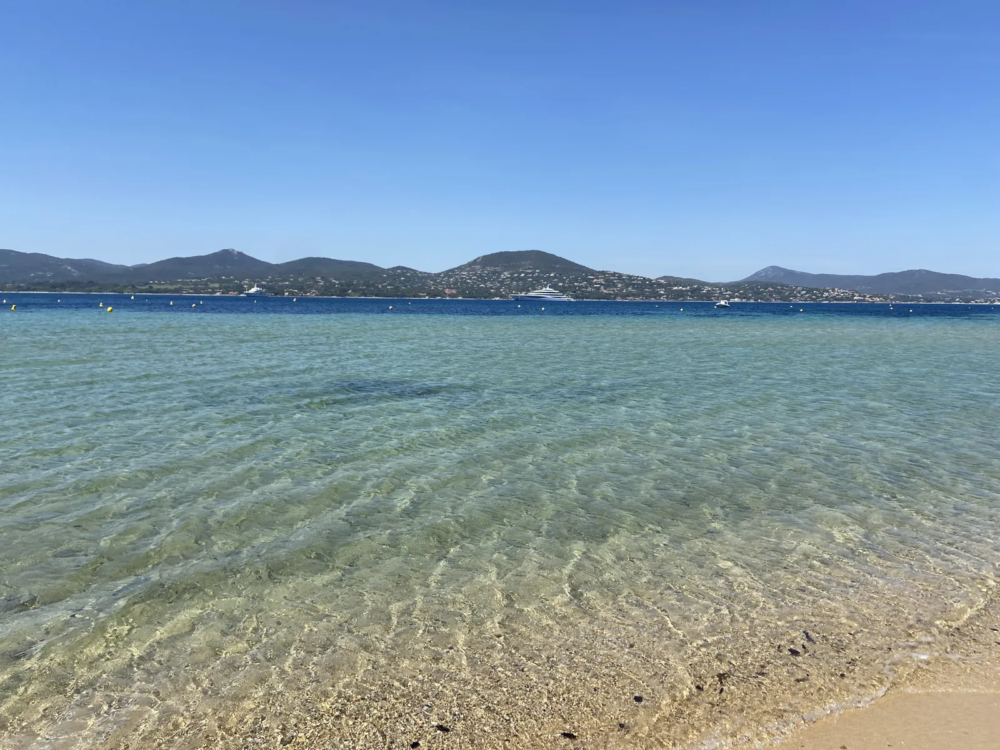
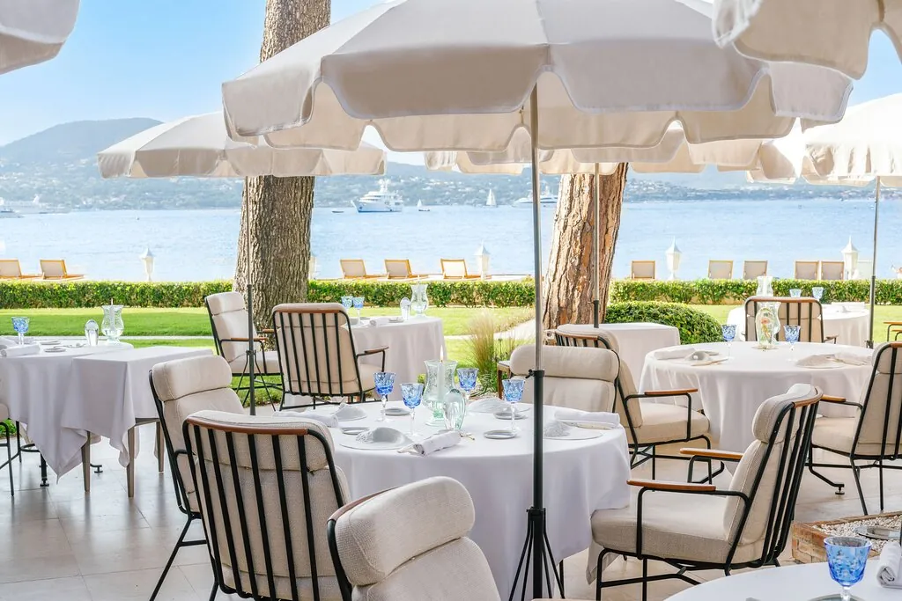
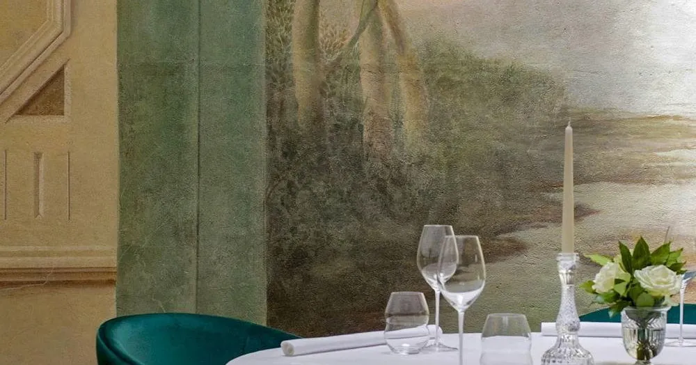
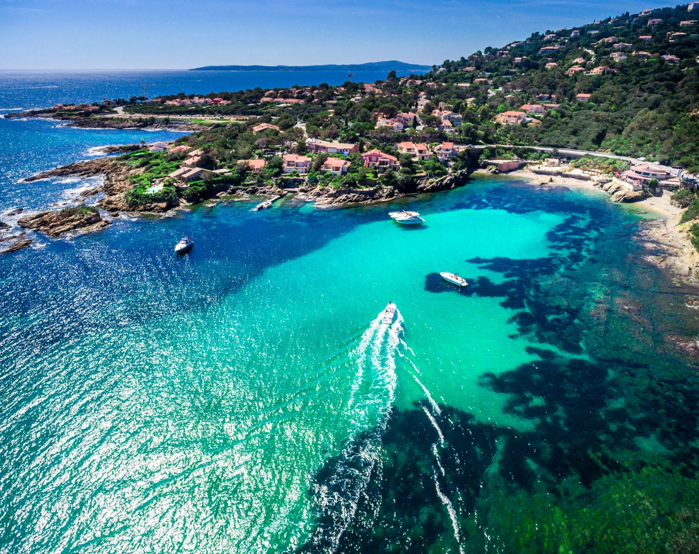
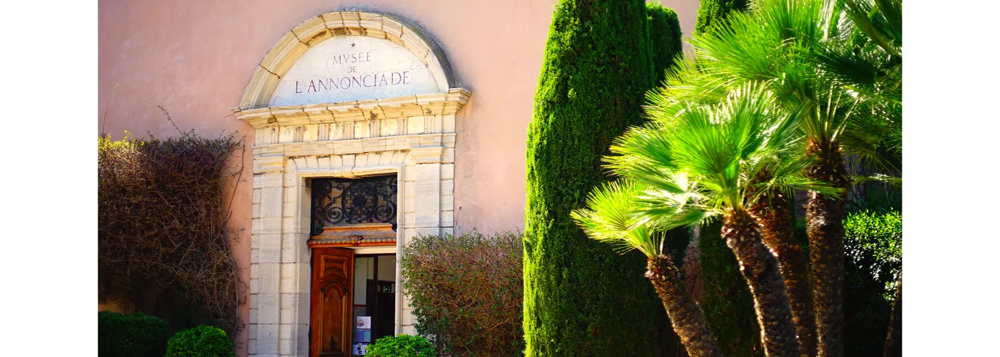

A Michelin weekend on the peninsula — anchored by the dinner you book first
The dinner choice governs everything else. Pick La Vague d'Or (3★) and your evening ends steps from the Vieux Port. Pick La Voile (2★, Ramatuelle) and a Pampelonne afternoon leads naturally to the table — no transit required. Every other element of the weekend — beach clubs, the coastal path, hilltop villages — is manageable on short notice. The reservation is not. [1]




Musée de l’Annonciade (€5–6, closed Tuesdays): Signac, Matisse, Derain — the painters who made Saint-Tropez famous before Bardot did. [src] Wander La Ponche old fishing quarter after: a maze of cobbled lanes off the port. [src] The Citadelle (€9, reopened 18 Apr 2026) for coastal views. [src]